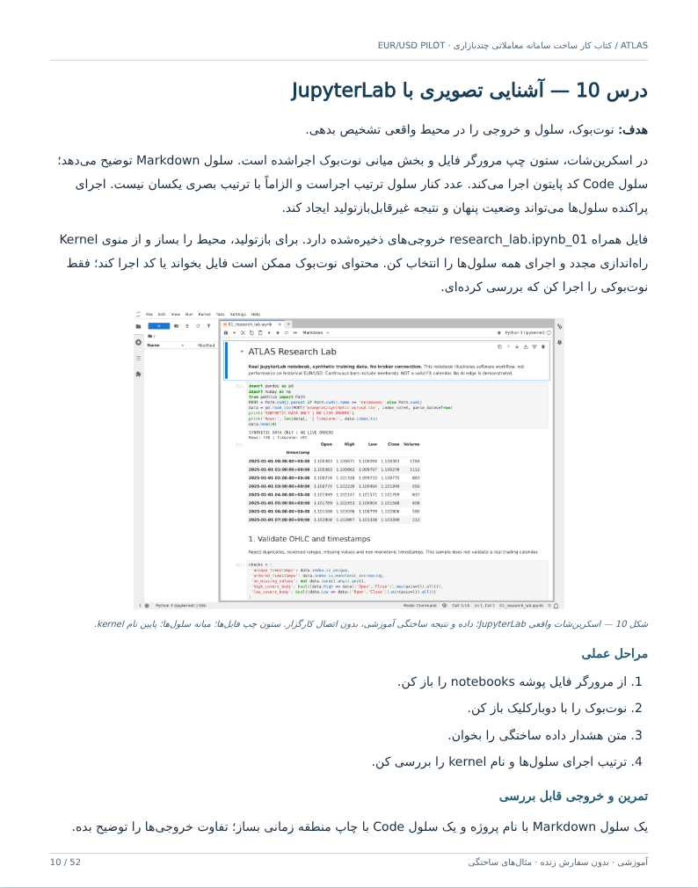

ATLAS / نسخه اصلاحشده مصور
کتاب کار ساخت سامانه معاملاتی هوشمند چندبازاری
از یک بازار تا معماری جهانی
۵۲ درس با هدف، توضیح، تصویر، مراحل عملی و تمرین. شروع پژوهشی از EUR/USD؛ پایش خبر، تلگرام و شبکه اجتماعی، کنترل ریسک مستقل از AI، بکتست و توسعه بازارهای بعدی.
۵۲ تصویر در متن مارکدان
۸ اسکرینشات واقعی از JupyterLab و Backtesting.py/Bokeh، ۱۶ نمودار و طرح توضیحی و ۲۸ نقشه مفهومی.
نرمافزارها واقعاً اجرا شدهاند، اما دادهها و معاملات نمونه ساختگی هستند. این کتاب ربات زنده یا اثبات سودآوری نیست و اسکرینشات کارگزار انتخابنشده ارائه نمیکند.
